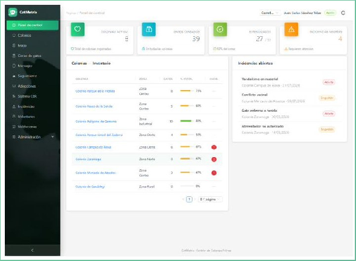
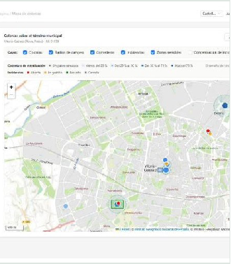
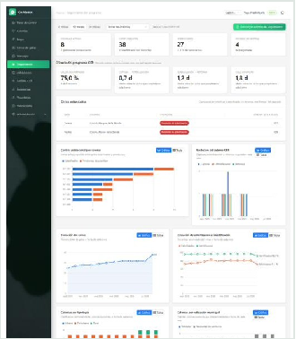
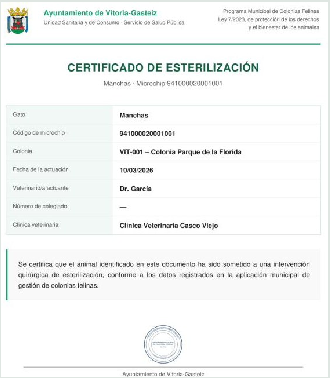
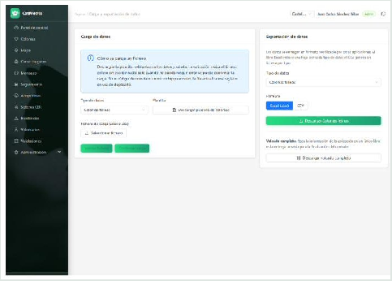
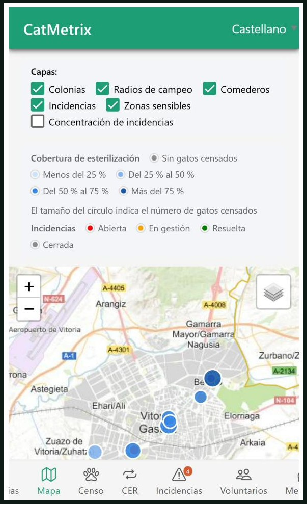
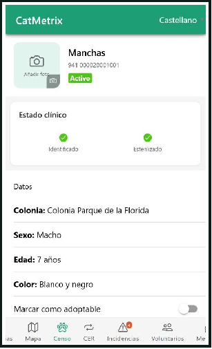
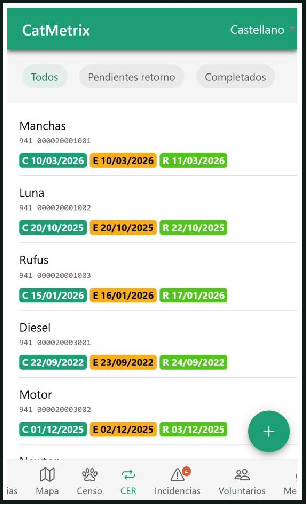

Censo, seguimiento CER, incidencias e indicadores en una única plataforma.Más control sobre la gestión. Más visibilidad sobre los resultados.

La mayoría de ayuntamientos gestionan el programa con hojas de cálculo y grupos de mensajería. Cuando llega una auditoría o una pregunta política, nadie puede responder en minutos.
CATMetrix convierte esta obligación legal en un procedimiento digital, trazable y acreditable desde el primer día.
Configuración del municipio y catálogos iniciales, sin desarrollo a medida.
Su hoja de cálculo actual, cargada y validada antes de escribir nada en el censo.
Sesiones diferenciadas para personal técnico, asociaciones y voluntariado.
Cartografía de seis capas sobre el IGN: colonias, incidencias, zonas sensibles y radios de campeo.
Historial completo por gato, con certificados oficiales de esterilización y vacunación en PDF.
Captura, esterilización y retorno con indicadores de eficacia y alertas de ciclos estancados.
Quejas geolocalizadas con flujo de estados y expediente acreditativo completo.
Credencial digital, validación municipal de propuestas y mensajería interna por ámbitos.
Informes automáticos, periódicos y exportables, con las mismas cifras que la pantalla.




Cualquier entidad, o el volcado completo del programa, se exporta a Excel y CSV. El censo se publica también en GeoJSON estándar a través de la API, listo para cualquier sistema de información geográfica municipal.
La aplicación móvil, disponible para Android y para iOS, comparte con la web el mismo modelo de datos y las mismas reglas. No es una versión reducida: es la misma herramienta, pensada para el trabajo en el punto exacto donde ocurre.
La ubicación la toma el mismo dispositivo al dar de alta una colonia, un punto de alimentación o un aviso.
Para la ficha del animal y para el recinto de la colonia, sin pasos intermedios.
Colonias, gatos, CER, incidencias y voluntariado, dados de alta directamente en el punto de trabajo.

Mapa con capas activables
Ficha clínica con cámara
Sistema CEREl efecto sobre la calidad del censo es inmediato: el dato se registra donde y cuando se observa, que es el único momento en que es exacto.
Cada ayuntamiento configura su propio entorno: identidad, catálogos y encuadre, sin tocar código.
Catalán, castellano, euskera y gallego, también en los certificados e informes en PDF.
Autenticación obligatoria, cifrado en tránsito, copias diarias y trazabilidad de autoría en cada acción.
Mantenimiento correctivo, adaptativo y evolutivo incluido durante toda la vigencia del contrato.
También en certificados e informes.
Su hoja de cálculo actual, cargada y validada.
Le ofrecemos una demostración sin compromiso sobre datos reales de su municipio.